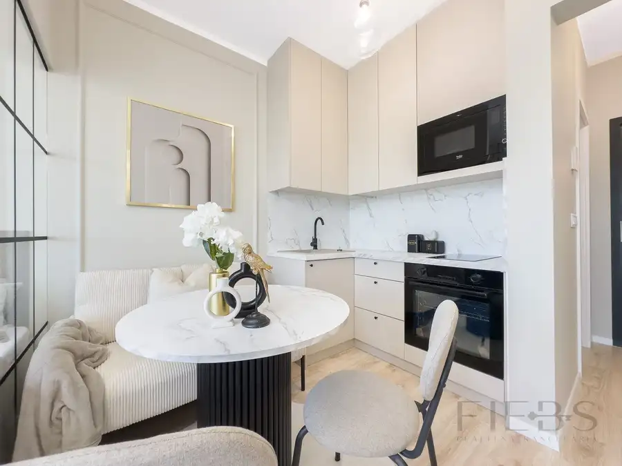
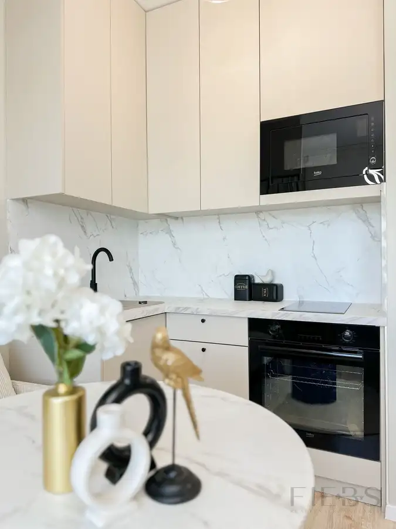
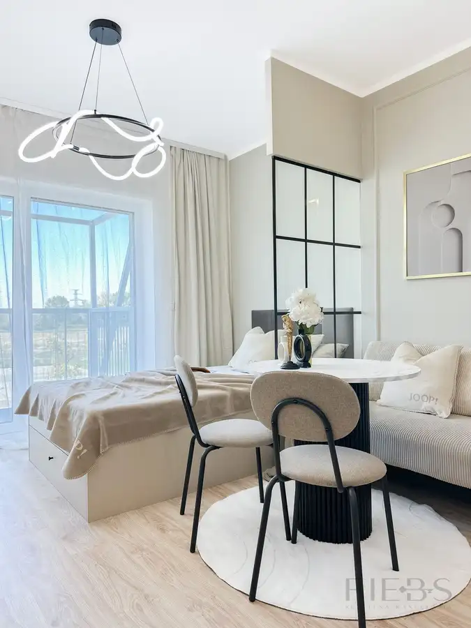
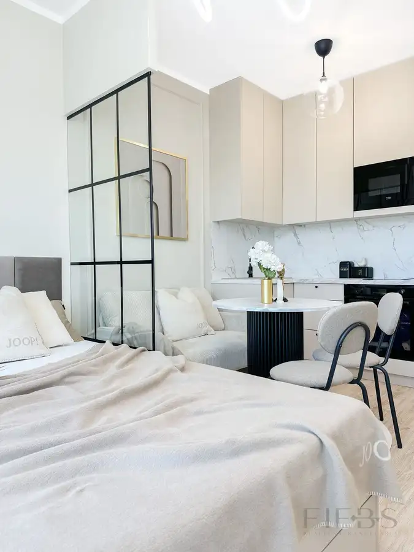
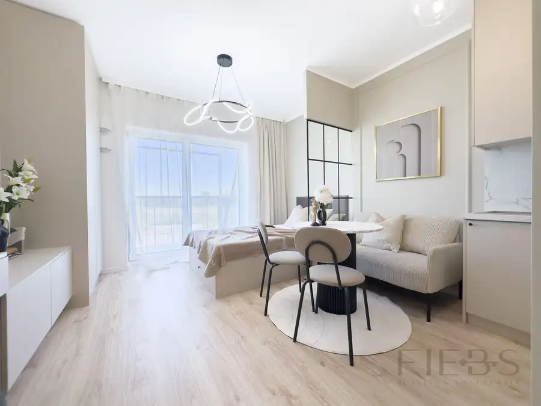
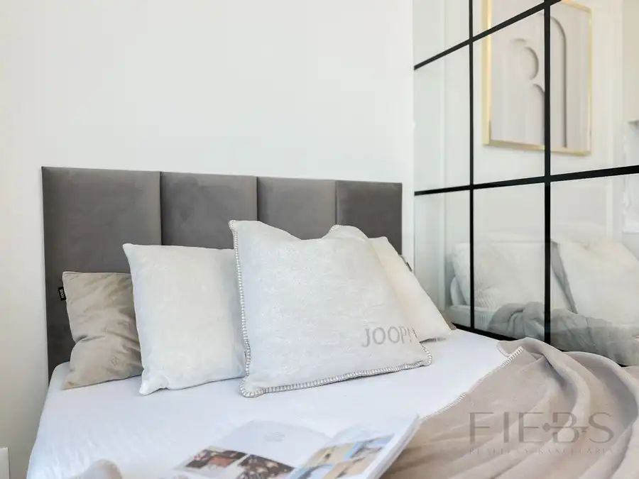
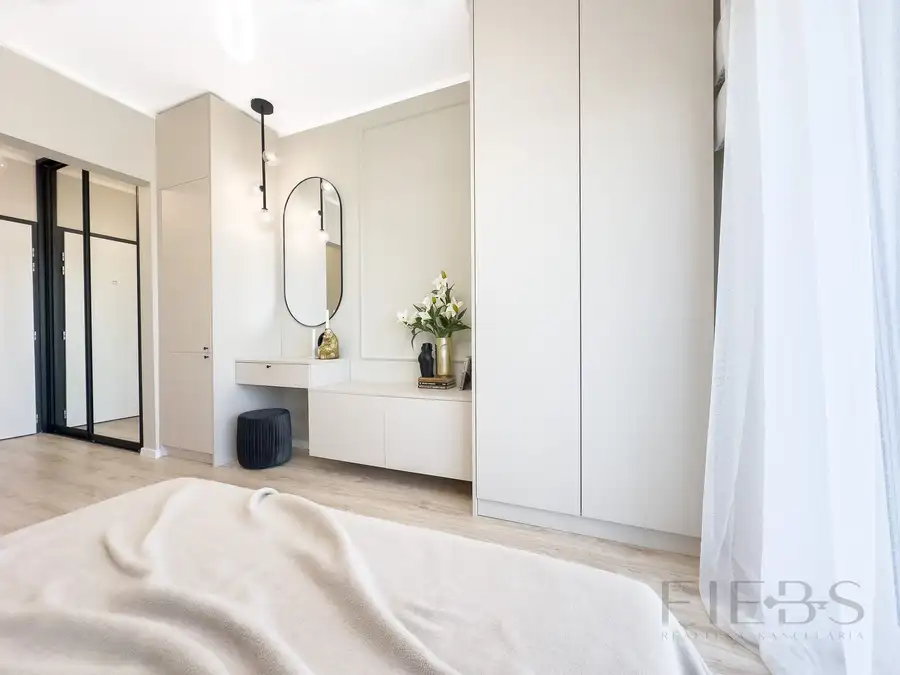
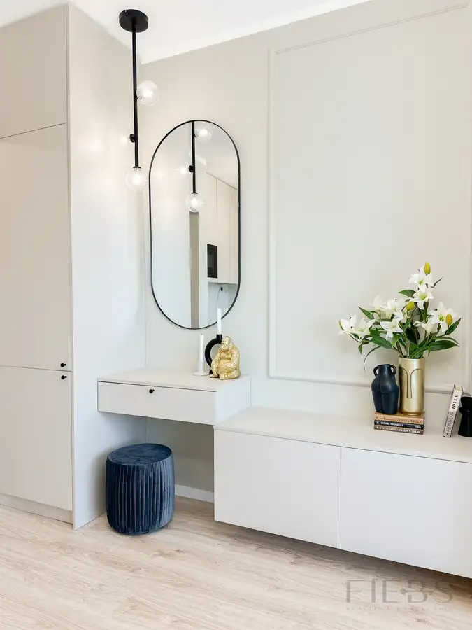
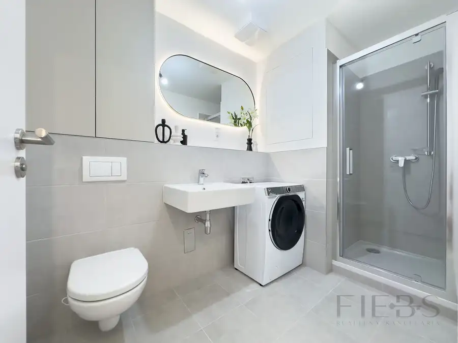

FIEBS | Nadštandardný 1 izbový byt s balkónom v novostavebe Slnečnice POP
Petržalka, Bratislava









- Dispozícia1-izbový
- Plocha28 m²
- Poschodie2. z 9
- StavNovostavba
- Energetická triedaB
O nehnuteľnosti
Realitná kancelária FIEBS ponúka na prenájom úplne nový, ešte neobývaný 1 izbový, plne zariadený byt.Byt má rozlohu 28m2 a nachádza sa na 2. podlaží 7 poschodového bytového domu. Výhodou bytu je veľký balkón s príjemným výhľadom.Dispozične byt pozostáva z predsiene s veľkou zrkadlovou roldor skriňou, odkiaľ sa vchádza do kúpeľne so sprchovým kútom spojenej s WC. V kúpeľni je tiež práčka a skrinka s úložným priestorom. Z predsiene sa ďalej vchádza do obývačky spojenej s kuchyňou a šikovným spacím kútom. Obývacia časť je vybavená pohodlnou pohovkou, jedálenským stolom so stoličkami, toaletným stolíkom so zrkadlom a nástenným obývačkovým nábytkom pod TV, vrátane TV a šatníkovej skrine. V kuchynskej časti je moderná kuchynská linka vyrobená na mieru vybavená základnými spotrebičmi. Nočná časť s čalúnenou posteľou (140x200cm) je vzdušne oddelená od zvyšku izby sklenenou stenou. Byt je vďaka veľkým oknám veľmi svetlý.Všetky doplnky a dekorácie v byte sú súčasťou home stagingu realitnej kancelárie FIEBS. Byt je voľný od 10.11.2026 a je vhodný pre 1 osobu, bez domácich zvierat.Cena prenájmu je 650€/mesiac vrátane energií. Pri podpise zmluvy sa hradí jedno mesačné nájomné vo výške 650,- EUR, depozit vo výške 650,- EUR a sprostredkovateľská provízia vo výške 650,- EUR. Byt sa nachádza v tichej, novovybudovanej časti, vedľa bytového domu je zastávka električky. V okolí je kompletná občianska vybavenosť, ako potraviny, kaviarne, bary, reštaurácie, pekáreň, lekáreň, drogéria, kaderníctvo, nechtové štúdio, textil, autobusová zastávka a ďalšie. V blízkej budúcnosti bude neďaleko domu dokončená zastávka električky.KONTAKT:JUDr. Simona FIEBEROVÁ0904 095 181fieberova@fiebs.skwww.fiebs.sk
Parametre
- Cena vrátane energií
- Áno
- Druh
- 1 izbový byt
- Dátum zverejnenia
- 07. 10. 2026
- Energetický certifikát budovy
- B
- Podlažie
- 2
- Počet nadzemných podlaží
- 9
- Rok výstavby
- 2024
- Stav nehnuteľnosti
- Novostavba
- Typ
- Prenájom
- Typ konštrukcie
- Zmiešaná
- Vybavenie
- Lodžia, Výťah
- Úžitková plocha
- 28 m²